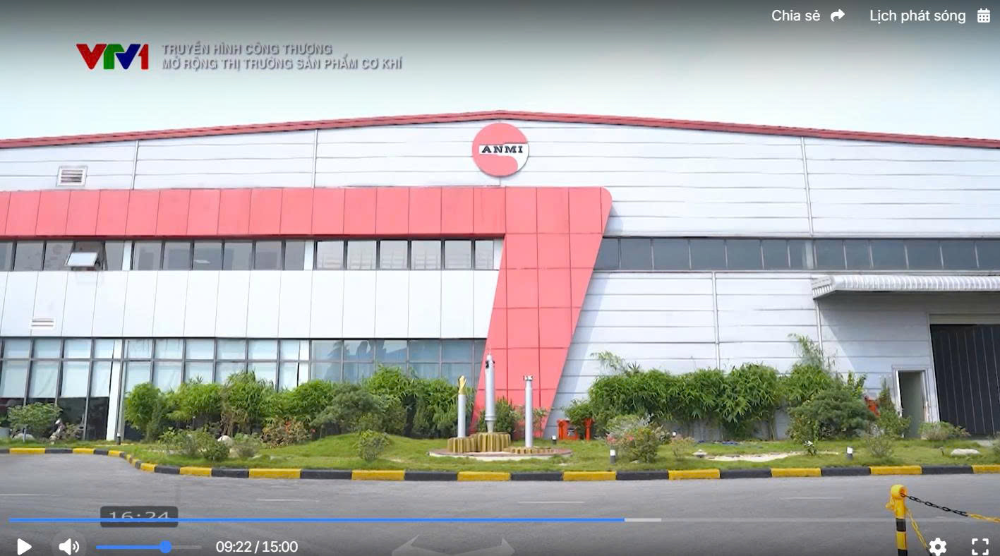
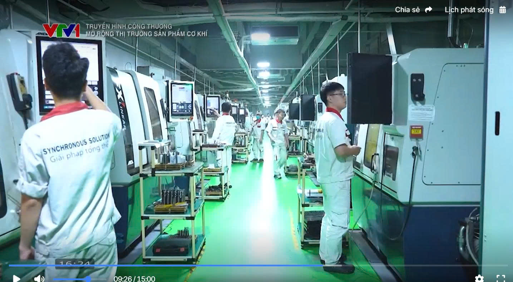

{kind=link}

Từ phóng sự VTV1 đến thực tế tại nhà máy Hưng Yên, câu chuyện của An Mi Tools cho thấy mở rộng thị trường sản phẩm cơ khí phải bắt đầu từ công nghệ, chất lượng và năng lực đáp ứng chuỗi cung ứng FDI.
Mở rộng thị trường sản phẩm cơ khí không phải là một khẩu hiệu truyền thông. Trong phóng sự của VTV1 về chủ đề mở rộng thị trường trong nước cho sản phẩm cơ khí, An Mi Tools xuất hiện như một ví dụ rõ ràng: muốn đi xa, doanh nghiệp phải đầu tư thật vào công nghệ, kiểm soát chất lượng và khả năng xử lý các đơn hàng khó.
Ông Vũ Văn Bách đã chia sẻ một điểm rất thực tế: để tham gia vào chuỗi cung ứng FDI, doanh nghiệp phải có máy móc phù hợp, năng lực gia công ổn định và hệ thống kiểm soát chất lượng đủ chặt chẽ. Đó là nền tảng để gia công cơ khí chính xác trở thành lợi thế cạnh tranh lâu dài.

An Mi Tools không mở rộng bằng cách chạy theo sản lượng ngắn hạn. Doanh nghiệp ưu tiên máy CNC đa trục tốc độ cao, máy laser công nghệ cao và các thiết bị hỗ trợ đo lường để đảm bảo sản phẩm có độ ổn định cao. Đây là nền tảng đầu tiên để mở rộng thị trường sản phẩm cơ khí một cách bền vững.
Trong nội dung phóng sự, những vật liệu như Titan, Inconel hay S2S được nhắc đến như một bài kiểm tra thật sự về năng lực kỹ thuật. Khi doanh nghiệp xử lý được các vật liệu khó, cơ hội đi vào những ngành hàng có giá trị cao sẽ rộng hơn rất nhiều.
Độ chính xác từ 2 đến 3 phần nghìn milimet không phải là con số để trưng bày. Nó là chuẩn mực vận hành, đo kiểm và kỷ luật sản xuất. Nếu doanh nghiệp không kiểm soát tốt sai số, việc mở rộng thị trường sản phẩm cơ khí sẽ rất nhanh bị chặn ở khâu đánh giá nhà cung cấp.
Khách hàng FDI không chỉ mua sản phẩm, họ mua sự tin cậy, khả năng lặp lại và năng lực giao hàng đúng hẹn. Đó là lý do An Mi Tools định vị mình trong chuỗi cung ứng của các doanh nghiệp lớn như Samsung và Toyota. Năng lực này là chìa khóa để mở rộng thị trường một cách thực chất.
Vai trò của ông Vũ Văn Bách cho thấy một điều rất quan trọng: người lãnh đạo không chỉ quản lý thương mại mà còn phải hiểu kỹ thuật, ngôn ngữ sản xuất và nhu cầu thực tế của khách hàng. Khi ban điều hành hiểu sản phẩm, chiến lược gia công cơ khí chính xác sẽ chắc và dài hơi hơn.

Để tăng độ tin cậy cho bài viết, có thể gắn thêm các liên kết ngoài và bài viết nội bộ liên quan.
Bắt đầu từ năng lực lõi: máy móc, quy trình đo kiểm, tay nghề kỹ thuật và khả năng đáp ứng khách hàng FDI. Khi nền tảng này ổn định, việc mở rộng thị trường mới có thể diễn ra bền vững.
Vì nội dung bài dựa trên phóng sự truyền hình của VTV1 về chủ đề mở rộng thị trường trong nước cho sản phẩm cơ khí, từ đó làm rõ góc nhìn thực tế của doanh nghiệp.
Alt nên mô tả đúng nội dung ảnh và có thể lồng focus keyword một cách tự nhiên. Ví dụ: “mở rộng thị trường sản phẩm cơ khí tại nhà máy Hưng Yên của An Mi Tools”.
{kind=link}